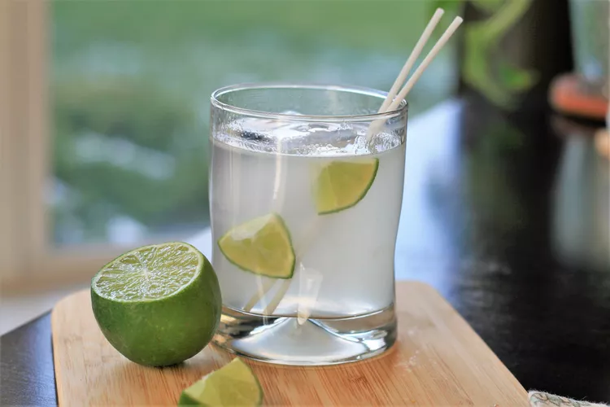

Gin and Tonic Recipe

Description
A refreshing recipe for a nice summer afternoon
Ingredients
- Ice cubes
- Gin
- Tonic water
- Fresh lime juice
- Lime wedge
Steps
- Add ice cubes in the glass
- Pour gin
- Add tonic
- Add lime juice
- Stir well
- Garnish with lime wedge